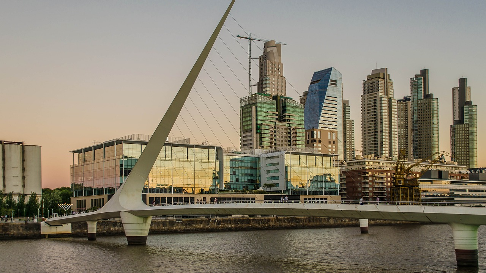
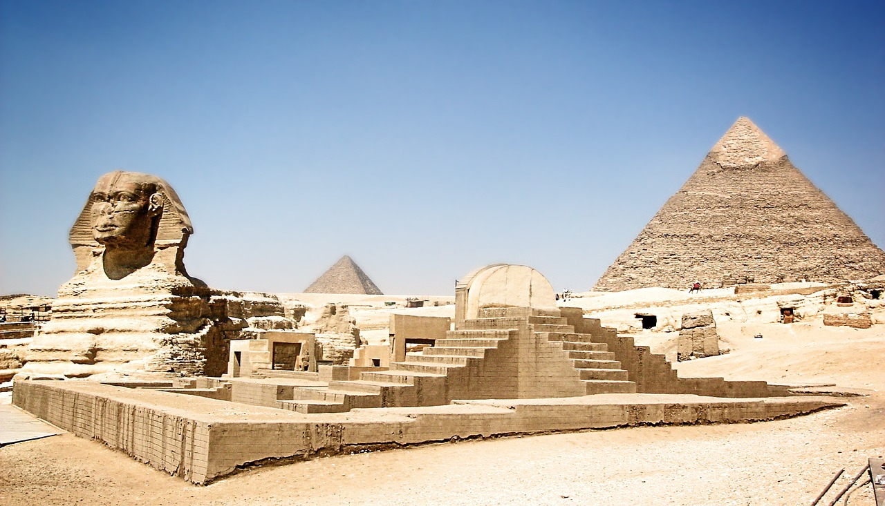

Tiempo de calidad, Relojes de Calidad
Nuestra linea de Relojes inspirados en las ciudades mas famosas
El tiempo es un flujo constante e implacable que rige nuestra existencia. Es la sucesión interminable de momentos, marcada por el cambio incesante. Desde el amanecer dorado hasta el crepúsculo sereno, el tiempo se desliza como un río, llevando consigo nuestras experiencias, sueños y recuerdos. En cada instante, el tiempo nos desafía a apreciar su fugacidad y a abrazar la vida con gratitud y plenitud.


Buenos Aires

En Buenos Aires, el tiempo es un espectáculo cambiante y apasionante.
Sus estaciones danzan con gracia, desde los veranos calurosos que
llenan las calles de vida y música, hasta los inviernos frescos que
invitan a saborear un mate caliente. El clima de Buenos Aires es un
reflejo de su diversidad cultural, siempre dispuesto a sorprender con
sus caprichosos cambios y avenidas bañadas por el sol.
 Nueva York
Nueva York
En Nueva York, el tiempo es un acto teatral en constante evolución.
Sus estaciones marcan el pulso de la ciudad: primavera, un despertar
de parques florecientes; veranos brillantes en rascacielos; otoños con
hojas doradas y un invierno que cubre la Gran Manzana de un manto de
nieve, mientras la ciudad nunca duerme, sin importar el clima.


Egipto

En Egipto, el tiempo es un testigo milenario de la historia. El sol
del desierto brilla sin tregua, abrazando las pirámides y el Nilo. El
clima es eternamente cálido, con veranos ardientes y noches frescas.
La arena del desierto susurra secretos de faraones y faros antiguos,
mientras que el río Nilo fluye con la promesa de fertilidad. Egipto es
un reloj de arena donde el pasado y el presente se entrelazan en una
danza eterna bajo el cielo azul claro.
Roma
En Roma, el tiempo es un testigo silencioso de la grandeza pasada y
presente. Sus calles adoquinadas resonaron con las hazañas del Imperio
Romano y hoy abrazan la vida moderna. El sol dora monumentos antiguos
y plazas con encanto, mientras el tiempo parece detenerse entre los
restos históricos y los cafés al aire libre. Roma es una ciudad donde
el pasado y el presente convergen en una sinfonía atemporal bajo el
cálido cielo italiano.

 Londres
Londres

En Londres, el tiempo es un ballet constante de nubes y niebla que
envuelve la ciudad. Sus estaciones se expresan en matices: primavera
en los parques florecientes, verano con días eternos, otoño de hojas
doradas y un invierno que pinta la ciudad de blanco. Las luces de la
ciudad brillan bajo la lluvia, y el Támesis refleja la historia en sus
aguas. Londres es una melodía climática, donde el pasado y el presente
se entrelazan en la niebla londinense.